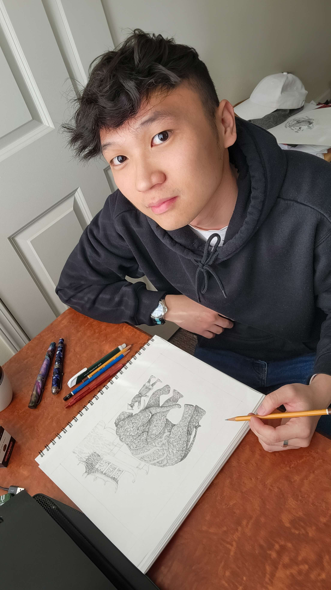

Khoi Tran - EST 1999
Brand Designer
A designer who thinks “multi-disciplinary” is a buzzword and wonders why we write bios in third-person.
I’ve been designing brands and digital experiences for almost a decade, approaching each project with equal parts strategy and style. Currently living in San Diego, CA, and working with the talented team at Five&Done in Orange County.
When I’m not photosynthesizing in the warm glow of my computer screen, you can find me reading an old book, reorganizing my living space (again), and snacking on an unhealthy amount of Goldfish and trail mix.
If you have any exciting projects to talk about, or just want to be friends, feel free to hit me up.